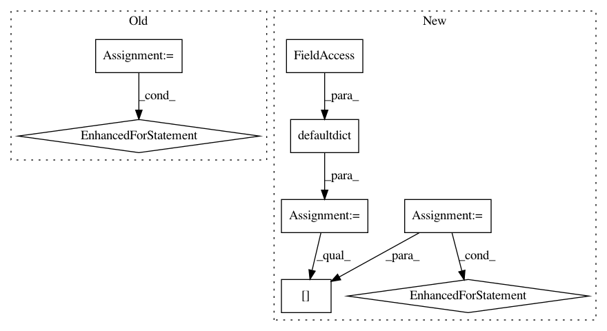

a4a36ff66ac3deff1ea024f58e86e003ed83bb67,src/python/pants/backend/jvm/tasks/jvm_compile/jvm_compile_global_strategy.py,JvmCompileGlobalStrategy,compute_classes_by_source,#JvmCompileGlobalStrategy#Any#,346
Before Change
if os.path.exists(analysis_file):
products = self._analysis_parser.parse_products_from_path(analysis_file,
self._classes_dir)
for src, classes in products.items():
relsrc = os.path.relpath(src, buildroot)
classes_by_src[relsrc] = classes
return classes_by_src
def post_process_cached_vts(self, cached_vts):
Special post processing for global scala analysis files.
After Change
raise TaskError("Inconsistent analysis file for the global strategy: {} vs {}".format(
compile_context.analysis_file, analysis_file))
classes_by_src_by_context = defaultdict(dict)
if os.path.exists(analysis_file):
// Parse the global analysis once.
buildroot = get_buildroot()
products = self._analysis_parser.parse_products_from_path(analysis_file,
self._classes_dir)
// Then iterate over contexts (targets), and add the classes for their sources.
for compile_context in compile_contexts:
classes_by_src = classes_by_src_by_context[compile_context]
for source in compile_context.sources:
absolute_source = os.path.join(buildroot, source)
classes_by_src[source] = products.get(absolute_source, [])
return classes_by_src_by_context
def post_process_cached_vts(self, cached_vts):
Special post processing for global scala analysis files.
In pattern: SUPERPATTERN
Frequency: 4
Non-data size: 8
Instances
Project Name: pantsbuild/pants
Commit Name: a4a36ff66ac3deff1ea024f58e86e003ed83bb67
Time: 2015-04-11
Author: stuhood@gmail.com
File Name: src/python/pants/backend/jvm/tasks/jvm_compile/jvm_compile_global_strategy.py
Class Name: JvmCompileGlobalStrategy
Method Name: compute_classes_by_source
Project Name: pfnet-research/chainer-chemistry
Commit Name: e2db5e6a3016d4df77312d8faf78cddb4d0bff5c
Time: 2019-01-29
Author: acc1ssnn9terias@gmail.com
File Name: examples/qm9/plot.py
Class Name:
Method Name: main
Project Name: KaiyangZhou/deep-person-reid
Commit Name: 9aa1aa24c0eaafb95f3a0a580de9df38e803e039
Time: 2018-08-16
Author: k.zhou@qmul.ac.uk
File Name: torchreid/samplers.py
Class Name: RandomIdentitySampler
Method Name: __iter__
Project Name: pantsbuild/pants
Commit Name: 0b03c97748a27d26f5284ce1c88ed1b41316ede6
Time: 2016-11-17
Author: wangpeiyu@gmail.com
File Name: src/python/pants/backend/jvm/zinc/zinc_analysis_parser.py
Class Name: ZincAnalysisParser
Method Name: parse_deps